IonDTN - A DTN Provider Application for ANDROID
Introduction
Thank you for your interest in ION-DTN and the IonDTN Android application!
This documentation will help you getting started with developing client applications that use the IonDTN provider application to communicate with other DTN nodes.
Furthermore, this documentation contains information about the structure of the IonDTN application and the design decisions that were taken during the development process. This might be helpful when modifying or maintaining the app.
Table of Contents
This documentation is split into multiple parts. After this introduction, the chapter Requirements contains details regarding required development files and toolchains. Chapter 3 gives a brief introduction in how to develop a minimal Android application that uses IonDTN. Subsequently, Chapter 4 gives a detailed description of the interface that IonDTN provides.
While reading the chapters 1-4 are sufficient in order to develop DTN-enhanced applications, Chapter 5 and Chapter 6 are giving a detailed insight into the architecture and operating principles of the provider application and the provided sample applications.
Requirements
Requirements depend on whether you have IonDTN already installed on your device, i.e. through
- Google Play,
- A third-party app store or
- By installing an
.apk-archive.
If that is the case, you only need the basic software elements. If you also have to build the IonDTN application, additional components are necessary.
Note: If you are using IonDTN from a third-party platform, please ensure that the app version version is corresponding to this documentation. Otherwise, you might end up with a malfunctioning interface interaction.
Requirements for the client applications
Android Studio
Android Studio is the official IDE for Android and although there are also other IDEs for Android development, Android Studio is the way to go. Therefore, this documentation is assuming that you are using Android Studio when describing tasks.
Android Studio is available for free for Windows, Mac and Linux and can be downloaded at the linked website.
Android SDK
The Android Software Development Kit (SDK) contains the actual source code that is used to compile your application into an installable .apk archive. As the source code and the operating system interfaces vary between Android versions, you need to have the appropriate SDK version installed on your development machine. Usually, Android Studio handles the installation itself and just asks you for permission to install the correct version. However, if that is not the case, you can always check and install different versions in Android Studio at Tools -> Android -> SDK Manager.
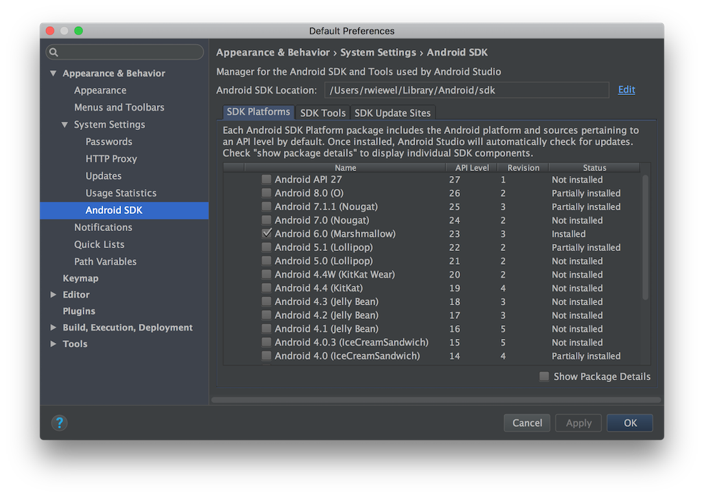
Requirements for the provider application
Android NDK
The Android Native Development Kit (NDK) is required to interact with native code, in this case written in the programming languages C and C++. In order to use existing ION-DTN components, the NDK has to be installed on the development machine to build the provider app.
You can install the NKD via the Android Studio at Tools -> Android -> SDK Manager (Tab SDK-Tools).
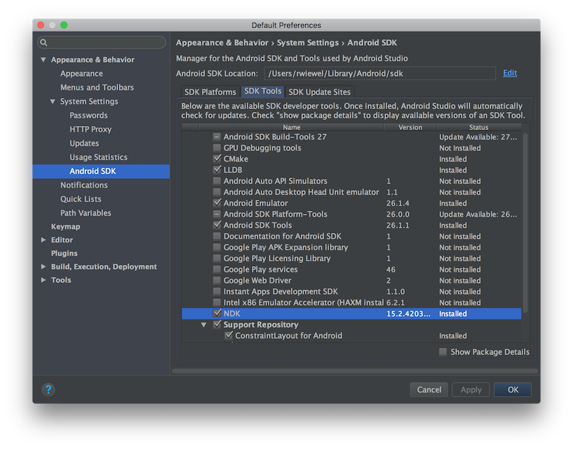
Additionally, if you integrate the NDK by adding the following lines to your build.gradle file, Android Studio will ask you about installing the NDK:
externalNativeBuild {
ndkBuild {
path "<Path to your Android.mk file>"
}
}
You can find more details on how to use the NDK in the chapter JNI Interaction.
Getting Started: "Hello World"
In this introductory chapter we will create a small Android application that follows the "Hello World" tradition and sends a bundle with the string payload "Hello World!" to a node selected by the user.
Note: This tutorial assumes some prior knowledge about the programming of Android applications and will mostly just cover the relevant parts in context of the IonDTN interaction. If you are new to Android programming, please refer to the (very good) tutorials at the Android Website. Besides the details of the Java programming language, Android has some special patterns and restrictions that are worth knowing.
In order to accomplish this task, the app has to work through a few subtasks. These tasks are shown in the following diagram:
- First, we have to create an GUI that can take the destination EID as an user input.
- Then, we have to get a handle for the IonDTN's
BundleServiceand then bind to that service using the handle. - Whenever the user triggers an event by pressing an button in the GUI, we use the bound service to send out a bundle to the defined destination EID.
Application Setup
First, we have to create a new application, design an graphical user interface (GUI) and grant the application some necessary system permissions.
Note: The entire DtnHelloWorld project can be found at
arch_android/Demo_Applications/IonHelloWorld. Instead of extracting all the code snippets from this tutorial you can simply open/copy it and then continue reading.
Create a new project
Assuming that you have already installed Android Studio as described in the chapter "Requirements", please open Android Studio and select File -> New -> New Project. A new dialog pops up where you can setup the new project:
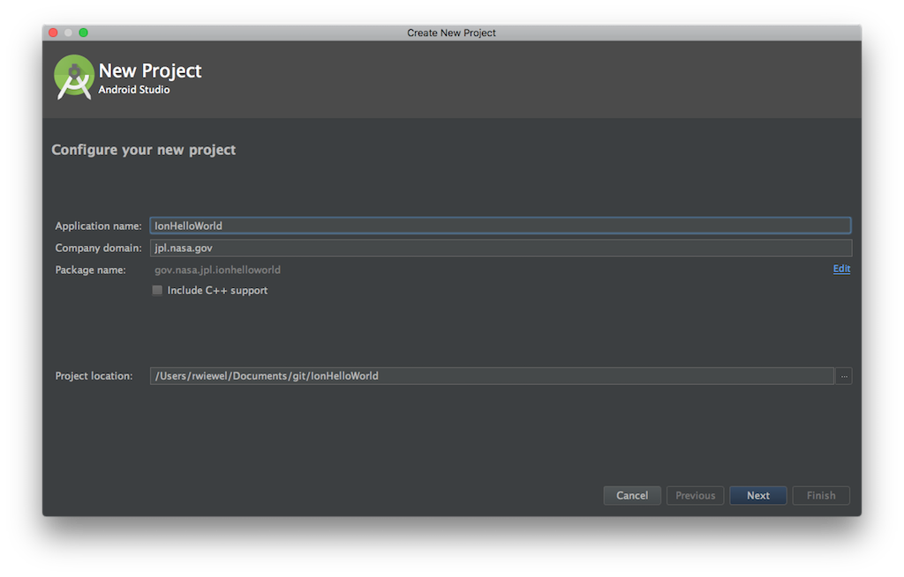
We are calling the application "IonHelloWorld" and after clicking Next we can select the "Minimum SDK".
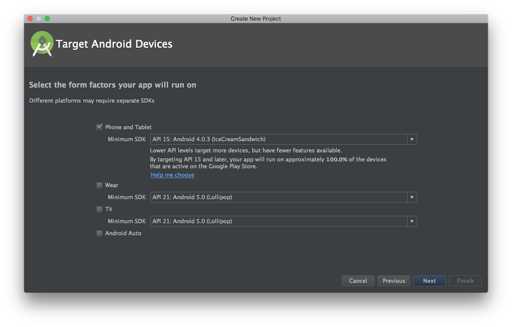
Just use the standard settings and click Next.
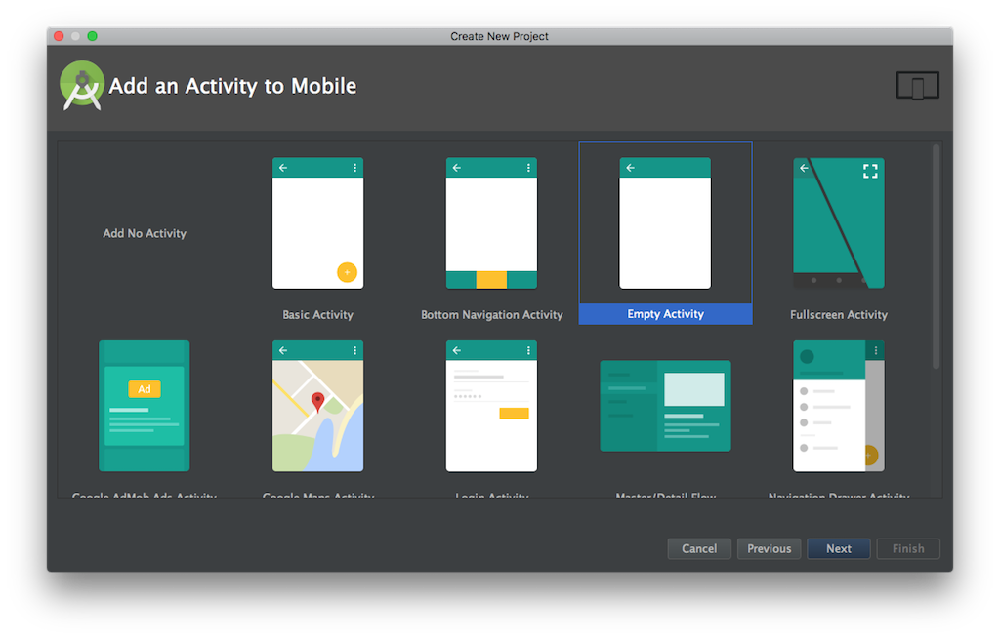
In the following dialog we can pick a start activity. We're also going with the default selection here which is an "Empty Activity". Click Next.
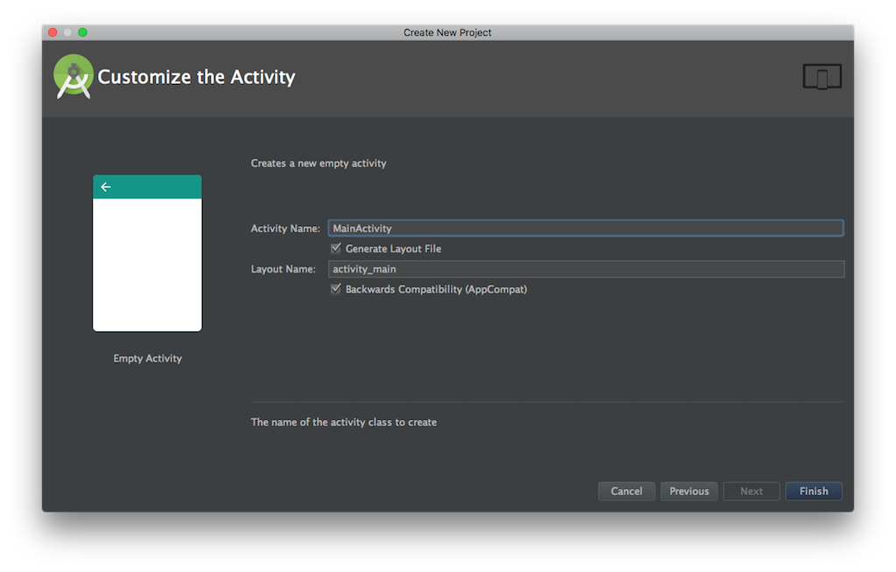
Finally, we have to pick a name for your activity. Accept the default and click Finish to create the project. Android Studio will now create all required files and change it's layout. After the creation process has finished, you can find all project files in the top left corner of the window.
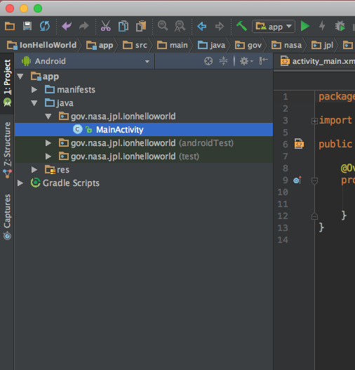
Create the GUI
As next step we have to create a GUI that allows the user to enter a destination EID and trigger the sending process. For entering the destination EID we are going to use an editText object and for triggering the event a basic button object:
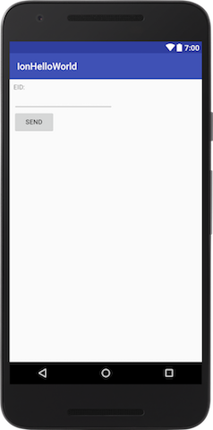
The code for this layout has to be put into app/res/layouy/activity_main.xml:
<?xml version="1.0" encoding="utf-8"?>
<android.support.constraint.ConstraintLayout
xmlns:android="http://schemas.android.com/apk/res/android"
xmlns:app="http://schemas.android.com/apk/res-auto"
xmlns:tools="http://schemas.android.com/tools"
android:layout_width="match_parent"
android:layout_height="match_parent"
tools:context="gov.nasa.jpl.ionhelloworld.MainActivity">
<LinearLayout
android:layout_width="368dp"
android:layout_height="wrap_content"
android:orientation="vertical"
tools:layout_editor_absoluteX="8dp"
tools:layout_editor_absoluteY="8dp">
<TextView
android:id="@+id/textView"
android:layout_width="match_parent"
android:layout_height="wrap_content"
android:layout_weight="1"
android:text="EID:"/>
<EditText
android:id="@+id/editText"
android:layout_width="wrap_content"
android:layout_height="wrap_content"
android:layout_weight="1"
android:ems="10"
android:inputType="textPersonName"
tools:layout_editor_absoluteX="82dp"
tools:layout_editor_absoluteY="48dp"/>
<Button
android:id="@+id/button"
android:layout_width="wrap_content"
android:layout_height="wrap_content"
android:layout_weight="1"
android:text="Send"
tools:layout_editor_absoluteX="145dp"
tools:layout_editor_absoluteY="122dp"/>
</LinearLayout>
</android.support.constraint.ConstraintLayout>
For details on how to create a (more sophisticated) activity layout, please refer to the Android documentation.
We now have an application that has a layout and that can be executed on any Android device.
You can test this by connecting an Android device to your development machine, enabling debugging in the device's settings and pressing the Run 'app' icon in the toolbar:

Disable GUI elements
As the last step of this chapter, we want to disable the GUI elements for user interaction, in particular the button and the editText elements. These elements should only be selectable when the BundleService is connected.
@Override
protected void onCreate(Bundle savedInstanceState) {
// Initialize parent class
super.onCreate(savedInstanceState);
// Inflate layout of activity
setContentView(R.layout.activity_main);
// Bind layout elements to Java objects
button = (Button)findViewById(R.id.button);
editText = (EditText)findViewById(R.id.editText);
// Disable elements (until service is available)
button.setEnabled(false);
editText.setEnabled(false);
// Define 'click' behavior for button
button.setOnClickListener(new View.OnClickListener() {
@Override
public void onClick(View view) {
...
}
});
}
After initializing the parent class and inflating the layout, the layout elements have to be bound to Java object that can be used in the class. The two object should be available in other methods of this class, therefore they are defined class-wide and are just bound in the onCreate() function:
public class MainActivity extends AppCompatActivity {
Button button;
EditText editText;
...
Besides disabling the elements we are also assigning an OnClickListener to the button object. The content of this listener is defined in the chapter 'Hello World'.
IonDTN Setup
Besides creating an own application, we also need to have the IonDTN provider application installed and set up on the Android device.
IonDTN installation
If you have the IonDTN application already installed on your device, just make sure that the app version is compatible to this documentation. Otherwise you might use the provided interface in a wrong way.
If you haven't installed the IonDTN application yet, you probably want to build and deploy it yourself. In order to do so, just open the IonDTN project located in arch_android directory of the ION-DTN archive in Android Studio. Due to Android Studio's feature detection, it will ask you for permission to install all required SDKs and NDKs. Please install all these packages, connect your Android device and then proceed by pressing the Run 'app' icon in the toolbar:
Android Studio will build the app, install it on your device and open it.
You should be greeted by the following screen of the application setup:

IonDTN setup
Now we have to configure the app and the underlying ION-DTN instance.
Node Number
First, we have to select a node number:

Just choose "1" in order to ensure compatibility with the configuration file used in all subsequent steps.
Setup Type
After pressing the arrow button, you have to select one of the two setup options:

The options are characterized as follows:
- Empty Configuration: The all necessary daemons and services are started, but initially no contacts, ranges, etc. are created. The user has to use the IonDTN's GUI to set these up.
- Configuration based on
.rcfile: The user can select an.rcfile during the setup process and the configuration of that file is copied into the app configuration. Only the node number is overwritten. This overwriting allows the usage of the same configuration file for multiple devices.
For our "Hello World" project, please choose "Setup configuration based on file" and proceed by taping on the arrow button.
Permission
Depending on the Android version of your device and your security settings, you might be asked to give IonDTN the permission to access the devices external memory (which is the the memory that is accessible by the user and all other applications). Grant the permission and tap the arrow button to proceed.
Select Setup File

In the upcoming dialog you have to select an appropriate configuration file. For the purpose of the "Hello World" project, please modify the linked configuration file android_node.rc, copy it to your device and select it in the file selection dialog.
The following modifications are necessary:
- Assign a static IP address to your device (or use the already via DHCP assigned one, however, this might cause malfunction when a new IP address is assigned).
- Update both the in-/outducts and the plan details to correspond to the topology and your IP addresses.
The topology for our test is as follows:

You can use the linked pc_node.rc file to setup an ION-DTN file on your development machine or another computer.
Please refer to the ION-DTN configuration for details on how to configure an ION node.
Again, tap the arrow button in the IonDTN application and the app perform the setup of the node.
Finish setup
If the setup succeeded (i.e. the configuration file was consistent), you will see the following screen:

Congratulations, IonDTN Setup is now complete. Click on the button to leave setup and you will be redirected to the main status screen of the application.
Start/Stop ION-DTN

On the main status screen you can start and stop the underlying ION-DTN instance. Just press the switch in the top right corner and ION-DTN will start. The startup process will take some time, but you will get notified when the instance is started and ready to use. You can also follow the log messages that appear in the log output view whenever functions and deamons are invoked. Besides the in-app status information there is also a persistent notification.
The persistent notification serves two purposes:
- It ensures that the user is aware that ION-DTN is running in the background and that takes some resources.
- It prevents the service and the ION-DTN instance to get killed by the Android operating system. Android has a rigorous resource management and stops applications that are running in the background and still claiming memory and cpu cycles. However, in the case of the IonDTN provider application the app has to run continuously to ensure that bundles can be received at any time. By displaying the notification to the user (i.e. "starting the service of the application in the foreground" in Android's terms) the likelihood of the Android OS killing IonDTN is negligible.
Please start the ION instance before continuing in order to use it with DtnHelloWorld.
In-App configuration
After starting the ION-DTN instance, you can swipe right from the left side of the screen to open up the main navigation drawer. In this drawer you can select the various configuration elements to review and change the configuration of the node.

Although not necessary for our project, you can have a look what options are available there. Furthermore, in the "Settings" menu you can change some default values and reset the application if necessary (i.e. to load a different initalization .rc file).
Binding to IonDTN
Note: The entire DtnHelloWorld project can be found at
arch_android/Demo_Applications/IonHelloWorld. Instead of extracting all the code snippets from this tutorial you can simply open/copy it and then continue reading.
As next step, we will write the source code to bind the BundleService provided by the IonDTN app to our own application.
The following picture depicts the interaction between our app DtnHelloWorld and IonDtn:
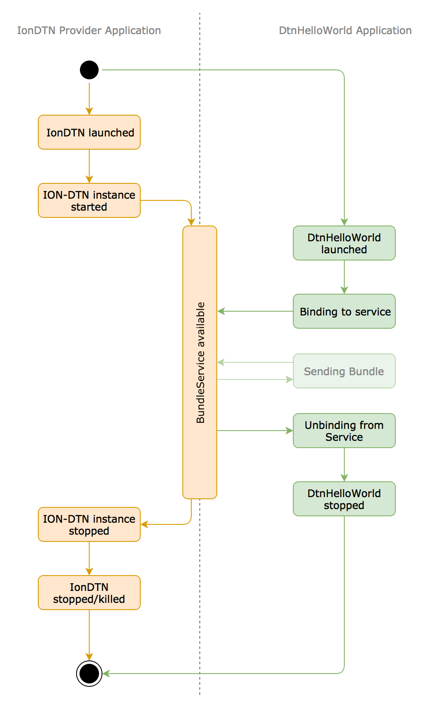
It becomes obvious that binding and unbinding from the BundleService is a very important part of the communication process.
Android Interface Description Language (AIDL)
Android has very strict rules in regards of inter-process/inter-app communication. Therefore, all communication has to follow a certain pattern that the OS can evaluate. In practice, every interface is defined by a so-called .aidl file. This file is written in the Android Interface Description Language (AIDL). Android Studio will use this file to create actual Java source code for resolving and responding to communication requests.
You can find out more about AIDL at this link.
As the BundleService is already implemented in IonDTN, you don't have to implement the AIDL file yourself. Instead, just create three .aidl files with the names IBundleService.aidl, IBundleReceiverListener.aidl and DtnBundle.aidl and copy the contents in there.
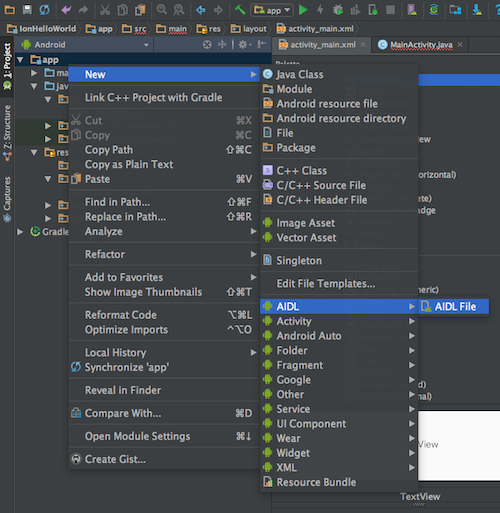
The next time that you are building (Build -> Build Project) or running the project, Android Studio will create the Java code and you are ready to use the interface functionality specified in the .aidl file. The functions are then also available via autocomplete.
IBundleService.aidl
The first of the thre .aidl files you copied earlier is the interface specification of the actual BundleService:
// BundleService.aidl
package gov.nasa.jpl.iondtn;
import gov.nasa.jpl.iondtn.IBundleReceiverListener;
import gov.nasa.jpl.iondtn.DtnBundle;
interface IBundleService {
// Open an endpoint object with the specified source eid
boolean openEndpoint(String src_eid, IBundleReceiverListener listener);
// Close the previously opened endpoint object
boolean closeEndpoint();
boolean sendBundle(in DtnBundle b);
}
You can see that three different interface functions are defined. What these functions do will be covered later. For now, it is only important that the IBundleService.aidl exists in the DtnHelloWorld project.
IBundleReceiverListener.aidl
As you may have noticed, the IBundleService.aidl file has the line:
import gov.nasa.jpl.iondtn.IBundleReceiverListener;
Also, one of the function uses IBundleReceiverListener as a parameter. The reason for this is that there has to be a feedback path to notify the subscribed app about received bundles. A constant polling by the app is not very efficient. The solution is a listener interface that the calling app (i.e. DtnHelloWorld) creates and provides to the IonDTN application:
// IBundleReceiverListener.aidl
package gov.nasa.jpl.iondtn;
import gov.nasa.jpl.iondtn.DtnBundle;
interface IBundleReceiverListener {
/**
* Is called when a bundle assigned to the subscribers eid has been
* received in ION
*/
int notifyBundleReceived(in DtnBundle b);
}
The interface defines one callback (receiving) function. As we are not implementing any receiving functionality in the DtnHelloWorld application, this functions is not relevant yet. You can find out more about how to send bundles in the chapter "Sending Bundles".
DtnBundle.aidl and DtnBundle.java
Again, in IBundleReceiverListener.aidl the Type DtnBundle is used:
import gov.nasa.jpl.iondtn.Bundle;
...
int notifyBundleReceived(in DtnBundle b);
This type is necessary to be able to use a custom object containing both the payload and additional bundle metrics (e.g. the source EID).
In order to use the DtnBundle type you have to add the following content to DtnBundle.aidl:
// IBundle.aidl
package gov.nasa.jpl.iondtn;
parcelable DtnBundle;
The only thing happening in this file is that Bundle is defined as parcelable, i.e being suitable for transmitting across process boundaries via IPC.
To allow client applications to use the Bundle object, additionally the gov.nasa.jpl.iondtn.DtnBundle.java file (provided here) has to be added to the project. You can achieve this by first adding a new package gov.nasa.jpl.iondtn and then adding the DtnBundle.java source file in that package.
Binding
Now that the interfaces are defined, we can implement the binding process.
The binding process itself is consisting of two steps. First, DtnHelloWorld has to request the service from the Android OS. This is accomplished by sending out an intent which requests the BundleService component of IonDTN.
As we want to connect to the service as soon as we are starting our application, we send out the intent when the app is started, i.e. in onStart():
@Override
protected void onStart() {
super.onStart();
if (mService == null) {
Log.d(TAG, "onStart: (Re-)Binding service");
// Create Intent
Intent serviceIntent = new Intent()
.setComponent(new ComponentName(
"gov.nasa.jpl.iondtn",
"gov.nasa.jpl.iondtn.services.BundleService"));
// Request to bind the service based on the intent
bindService(serviceIntent, mConnection, BIND_AUTO_CREATE);
}
}
Note: There are different states that an Android activity can have and depending on that state, different functions (e.g.
onCreate()oronStart()) are called. You can find out more about the activity lifecycle at this link.
We have to select the service we want to connect to by explicitly specifying its name, in our case "gov.nasa.jpl.iondtn.services.BundleService" of the component "gov.nasa.jpl.iondtn". This ensures that we connect to the right interface and that the other app understands what we want when calling an interface function.
The objects that are used in onStart() are also defined in MainActivity:
// Tag for debug logging purposes
public static final String TAG = "MainActivity";
The tag is just for logging purposes and allows you to determine which part of your application has emitted a certain log message.
// BundleService object
private gov.nasa.jpl.iondtn.IBundleService mService;
The mService object holds the interface information. This object was created automatically when you included the AIDL file earlier.
// Service connection object
private ServiceConnection mConnection = new ServiceConnection() {
@Override
public void onServiceConnected(ComponentName className, IBinder service) {
...
}
@Override
public void onServiceDisconnected(ComponentName className) {
...
}
};
Finally, we have the ServiceConnection object. It holds all information regarding the particular connection with the IonDTN application and implements two functions onServiceConnected() and onServiceDisconnected(). The first function is called when a service connection was established after an intent request. The latter function is the counterpart and is called whenever the service connection is shut down, i.e. when the application providing the service is shut down (that the latter function is called is not guaranteed by the Operating System).
First, lets implement the onServiceConnected() method:
@Override
public void onServiceConnected(ComponentName className, IBinder service) {
Log.d(TAG, "onServiceConnected: Service bound!\n");
// Save the service object
mService = gov.nasa.jpl.iondtn.IBundleService.Stub.asInterface(service);
// Update GUI
button.setEnabled(true);
editText.setEnabled(true);
}
The function is called by the operating system with an IBinder object as parameter. We have to save this object as it allows us to use the service. Furthermore, we can now activate the button and editText to allow user interaction.
We should also output a log message if the service get disconnected. This can be done in the onServiceDisconnected() method:
@Override
public void onServiceDisconnected(ComponentName className) {
Log.d(TAG, "onServiceDisconnected: Service unbound!\n");
}
Unbinding
When done using the service, our app DtnHelloWorld should close the connection to the service properly. This is relevant when the app is closed by the user. To close the service connection, we override the function onStop():
@Override
protected void onStop() {
super.onStop();
Log.d(TAG, "onStop: Unbinding service");
// Only unbind if bound in the first place
if (mService != null) {
// Disable GUI
button.setEnabled(false);
editText.setEnabled(false);
// Unbind service
unbindService(mConnection);
// Reset service element (GC will handle!)
mService = null;
}
}
We are only unbinding if a connection was established in the first place. As the establishing of a connection is realized asynchronously there is a chance that that never happened.
If we have a connection to close, we first disable the GUI and the call the OS unbinding function. After this function call we ensure that the garbage collection properly removes the old object by assigning null to mService.
Imports
In order to use all components that we just copied into the application, we also have to make sure that the correct includes are used. These includes should be included in the header of the MainActivity.java file.
import android.content.ComponentName;
import android.content.Intent;
import android.content.ServiceConnection;
import android.os.IBinder;
import android.os.RemoteException;
import android.support.v7.app.AppCompatActivity;
import android.os.Bundle;
import android.util.Log;
import android.view.View;
import android.widget.Button;
import android.widget.EditText;
import android.widget.Toast;
"Hello World"
Note: The entire DtnHelloWorld project can be found at
arch_android/Demo_Applications/IonHelloWorld. Instead of extracting all the code snippets from this tutorial you can simply open/copy it and then continue reading.
Sending
Now that DtnHelloWorld successfully binds and unbinds from the BundleService we can implement the actual transmission of our bundle to the destination EID.
Therefore we have to implement the OnClickListener of our button:
...
// Define 'click' behavior for button
button.setOnClickListener(new View.OnClickListener() {
@Override
public void onClick(View view) {
String payload = "Hello World";
// (1) Check if editText for the destination EID is empty, abort
// in that case
if (editDestEID.getText().toString().isEmpty()) {
Toast.makeText(getApplicationContext(), "Destination " +
"EID " +
"cannot be empty!", Toast
.LENGTH_SHORT).show();
return;
}
// (2) Ensure that the service is actually available
if (mService == null) {
Toast.makeText(getApplicationContext(), "Service not " +
"available!", Toast.LENGTH_LONG).show();
return;
}
try {
// (3) Create a Bundle object that holds all required
// metadata and the payload
DtnBundle b = new DtnBundle(editDestEID.getText()
.toString(),
0,
300,
DtnBundle.Priority.EXPEDITED,
payload.getBytes("UTF-8"));
// (4) Trigger sending of bundle by handing the bundle
// over to the BundleService
mService.sendBundle(b);
}
// (5) Catch error linked to BundleService (i.e. connection
// broke)
catch (RemoteException e) {
Toast.makeText(getApplicationContext(), "Failed to " +
"open endpoint!", Toast
.LENGTH_SHORT).show();
}
// (6) Catch error, when the payload cannot be encoded into
// UTF-8
catch (UnsupportedEncodingException e) {
Log.e(TAG, "onClick: UTF-8 encoding seems not to be " +
"available on this platform");
Toast.makeText(getApplicationContext(), "Failed to send bundle!", Toast
.LENGTH_SHORT).show();
}
}
});
...
In the following, all steps of that listener are explained in detail:
- Within our click handling routine, we first check if the user has entered a destination EID. We could do a sanity check on the entered EID here (i.e. check if a certain format is met), but to keep our application simple we just assume that the user enters a sound EID.
- If we discover that the service is not available, we have to abort.
- The payload that is provided as a string literal is encoded as UTF-8 and is then put into a new
Bundleobject , together with the EID and a Quality-of-Service indicator. - The
Bundleobject ist then handed over to the Bundle service by calling the interface functionsendBundle(Bundle b). - We also abort if the connection to the service was interrupted or the remote function call failed.
- In case that the UTF-8 encoding scheme is not available on the device we abort.
Note: We use the easier direct
ByteArrayencapsulation of the payload in theBundleobject. There is also another handover method available that allows the transmission of larger chunks of data by employing an file descriptor that is shared between app and service. You can find more details in the chapter "Sending Bundles".
Testing
To check that the application is doing what it is supposed to do you can run the app on your Android device (along with the started IonDTN app) and use the testing topology as described in the chapter "IonDTN Setup". Also start ION-DTN on your PC and launch bpsink <sink-eid> with the correct sink EID to receive the bundles from our DtnHelloWorld app.
Congratulations!
The simple DtnHelloWorld app is complete and the messages directed to the EID of your computer should appear in your command shell.
Interface
This chapter will introduce the functionality that is provided by the BundleService of the IonDTN application in more detail.
The basis for communicating with the BundleService is a proper binding to the client application. Only after the binding process has been completed successfully the sending/receiving procedures can be invoked.
Note: Please refer to the chapter "Binding to IonDTN" for more details on the binding process.
The chapter "Sending Bundles" introduces the sending routines that the interface provides and the chapter "Receiving Bundles" explains how a listener mechanism for receiving bundles can be established.
Sending Bundles
The Service "BundleService" provides a function that can be used to trigger ION to send out a bundle with a given payload:
// Send provided data, the payload is encapsulated in the DtnBundle object or provided as a file references
boolean sendBundle(in DtnBundle b);
Sending a byte array
/**
* Constructor that allows the instantiation of a DtnBundle with a ByteArray.
* @param eid The source EID
* @param creation_time The time that the DtnBundle was created. Is ignored
* when DtnBundle is sent.
* @param time_to_live The time-to-live value that the DtnBundle had when
* being received by ION-DTN
* @param priority The priority class of the DtnBundle (Bulk, Standard,
* Expedited)
* @param payload_byte_array The raw payload as byte array.
*/
public DtnBundle(String eid,
long creation_time,
int time_to_live,
Priority priority,
byte[] payload_byte_array) {
...
For small sizes the payload can be handed over to ION as a byte array. The conversion of intrinsic variable types to a byte array is very easy, e.g. for Strings this can be accomplished by the following code snippet.
String s = new String("This is a string!");
ByteArray b;
try {
b = s.getBytes("UTF-8")
}
catch (UnsupportedEncodingException e) {
// ... catch error here ...
}
Besides the payload parameter, the constructor of Bundle also requires the destination identifier (EID) as a string, the Time-to-Live and a quality-of-service parameter as an int.
The available quality-of-service classes are defined as an enum with the following values:
// The priority class of the (sending) bundle, invalid for received bundles
public enum Priority {BULK, STANDARD, EXPEDITED, INVALID}
The ByteArray constructor is feasible for small portions of data, however, if the data size increases, the usage of FileDescriptors is recommended. The reason for this is the overall size limitation for IPC data in Android. As of now, Android limits the transaction size to 1 MB in total1. This means that all applications running on an Android device have to share this small amount of memory. The limit might be increased in the future, but considering the back compatibility to older devices and Android versions, using as little memory as possible is recommended.
Note: Using the IPC memory in an excessive way cannot be prevented from IonDTN as it just gets the information about the size of the payload when the data has already been stored in the reserved memory region. However, if the IPC memory is exhausted, the IPC call will fail before even reaching IonDTN.
Sending a file descriptor
/**
* Constructor that allows the instantiation of a DtnBundle with a
* {@link ParcelFileDescriptor}.
* @param eid The EID
* @param creation_time The time that the DtnBundle was created. Is ignored
* when DtnBundle is sent.
* @param time_to_live The time-to-live value that the DtnBundle had when
* being received by ION-DTN.
* @param priority The priority class of the DtnBundle (Bulk, Standard,
* Expedited)
* @param payload_fd The {@link ParcelFileDescriptor} pointing to the
* payload of the DtnBundle.
*/
public DtnBundle(String eid,
long creation_time,
int time_to_live,
Priority priority,
ParcelFileDescriptor payload_fd) {
...
In order to send larger portions of data, the constructor of DtnBundle allows the handover of a file descriptor. This file descriptor is of the type ParcelFileDescriptor because it has to be transparent to the Android OS.
The procedure for using sendFile is as follows:
Create File
Create a new file or open an existing one in your app. This will give you a FileDescriptor for that file.
File f = new File(...);
FileOutputStream fos = new FileOutputStream(f);
(Optional) Write data to file
You can then create a FileOutputStream for that file and use the write method of the FileOutputStream to write your data into the file. If your file already contains the data that you want to send you can skip this step.
FileOutputStream fos = new FileOutputStream(f);
fos.write(<data>);
fos.close();
Open a ParcelFileDescriptor for your file
Open a ParcelFileDescriptor based on your file:
ParcelFileDescriptor pfd = ParcelFileDescriptor.open(f,
ParcelFileDescriptor.MODE_READ_ONLY);
The pfd object now holds a reference to your file that can be sent to IonDTN via IPC and that allows it to read the data of the file.
Create DtnBundle object
By calling the previously shown constructor, you can then create a Bundle object referencing the source file by holding the ParcelFileDescriptor pdf.
DtnBundle b = new DtnBundle(destEID,
0,
300,
DtnBundle.Priority.EXPEDITED,
pfd);
Call IonDTN
Now you can hand over the DtnBundle object holding the ParcelFileDescriptor object by calling the sendBundle function. As all AIDL IPC calls are executed synchronously, IonDTN will read the data from the file and when the IPC call returns you can simply close the file and the ParcelFileDescriptor.
Note: Using a file descriptor rather than a file object itself even allows the transmission of file content that is residing in the clients private application memory and would otherwise be inaccessible to IonDTN.
Source EID
As introduced in the Chapter Receiving Bundles, client applications can open endpoints in ION via the BundleService interface. Whenever an endpoint is opened for a specific client application, all bundles from that client application have the opened EID as source EID. If no endpoint is open (like in our Hello World example) the source EID dtn:none is used. This behaviour corresponds to the behaviour of the ION-DTN shell tool bpsend.
[1] https://stackoverflow.com/questions/38175781/android-ipc-maximum-transaction-size
Receiving Bundles
The two key functions for receiving data from the IonDTN application are listed in the following code snippet:
// Open an endpoint object with the specified source eid
boolean openEndpoint(String src_eid, IBundleReceiverListener listener);
// Close the previously opened endpoint object
boolean closeEndpoint();
The process of receiving the payload of bundles addressed to the own EID follows the publisher/subscriber software pattern and consists of multiple steps. The payload can only be received if the client application has previously registered for the particular EID as a listener.
IBundleReceiverListener
The registering can be done by calling the function registerListener. As a parameter for that, the client application has to implement the interface IBundleReceiverListener as defined in the aidl file:
// IBundleReceiverListener.aidl
package gov.nasa.jpl.iondtn;
import gov.nasa.jpl.iondtn.Bundle;
interface IBundleReceiverListener {
/**
* Is called when a bundle assigned to the subscribers eid has been
* received in ION
*/
int notifyBundleReceived(in Bundle b);
}
Whenever a bundle is received for the registered EID, the function of the implemented interface is called. If the payload is very small, the function returned Bundle object contains an ByteArray with the payload. However, if the payload exceeds a certain threshold, the Bundle containing a ParcelFileDescriptor pointing to a file with the data. The payload type of a particular bundle can be determined by the enum field type of Bundle. It is either BYTE_ARRAY or FILE_DESCRIPTOR.
Note: The size threshold for switching from
BYTE_ARRAYtoFILE_DESCRIPTORis defined as an integer value (representing bytes) in the settings ofIonDTNand can be changed via the GUI. Simply open the main navigation drawer, select "Settings" and then "General".
An implementation of the listener interface can be done within the calling class of the client application.
The following example is an showing how the interface can be implemented if the payload bytes are representing text encoded in UTF-8.
IBundleReceiverListener.Stub listener = new IBundleReceiverListener.Stub() {
@Override
public int notifyBundleReceived(gov.nasa.jpl.iondtn.Bundle b) throws RemoteException {
if (b.getPayloadType() == gov.nasa.jpl.iondtn.Bundle.payload_type
.BYTE_ARRAY) {
try {
received += "Source: " + b.getEID() + " Payload: ";
received += new String(b.getPayloadByteArray(), "UTF-8");
received += "\n";
runOnUiThread(new Runnable() {
@Override
public void run() {
textViewReceive.setText(received);
}
});
}
catch (UnsupportedEncodingException e) {
Log.e(TAG, "notifyBundleReceived: UTF-8 encoding is not " +
"supported on this device");
}
}
else {
String line;
FileInputStream in = new FileInputStream(b.getPayloadFD()
.getFileDescriptor());
BufferedReader br = new BufferedReader(new InputStreamReader(in));
try {
while ((line = br.readLine()) != null) {
received += "Source: " + b.getEID() + " Payload: ";
received += line;
received += "\n";
}
}
catch (IOException e) {
Log.e(TAG, "notifyBundleReceived: Failed to parse file referenced " +
"by file descriptor");
}
runOnUiThread(new Runnable() {
@Override
public void run() {
textViewReceive.setText(received);
}
});
}
return 0;
}
};
The return values of the function signal the success or failure of the reception process to the IonDTN application and have to follow the POSIX standard.
Note: Currently, the return values are not evaluated and thus the received data is discarded after the IPC call. This is to ensure that the memory management is sound.
Open Endpoints
When having implemented the IBundleReceiverListener interface the client application can then register at the IonDTN application to receive the payload of bundles addressed to one (or more) EIDs of the local node.
In order to register, the client application has to call
// Open an endpoint object with the specified source eid
boolean openEndpoint(String src_eid, IBundleReceiverListener listener);
The parameters are defined as follows:
- src_eid: A local EID that the client wants to receive the payload of incoming bundles from. (This eid is also used for sent out bundles of the particular client application after the endpoint has been opened).
- listener: The implemented
IBundleReceiverListenerinterface.
After the openEndpoint IPC function call, whenever bundles are received that are addressed to the registered EID, the IonDTN application is calling the appropriate receiver function of the client application.
Close Endpoints
If the client application no longer wants to receive the payload of bundles addressed to a certain EID, it can call the unregistering routine:
// Close the previously opened endpoint object
boolean closeEndpoint();
This unregisters the IBundleReceiverListener interface and sent out bundles have dtn:none as source eid again.
Sample Applications
Besides the project developed in the chapter "Hello World" there is another documented demo application available called "minimalTextApplication" and "CameraShare".
The sample applications might be helpful when developing an own application that should also include receiving functionality or that is sending/receiving large chunks of data.
MinimalTextApplication
The app "minimalTextApplication" can be found under arch_android/demo_applications/minimalTextApplication. It is more sophisticated than the "Hello World" example. It allows both sending and receiving text as bundles and comes with a GUI that lets the user choose both the payload and the destination EID.
CameraShare
The app "CameraShare" (arch_android/demo_applications/CameraShare) uses the Android's devices camera to take pictures and then sends these pictures to an specific EID. When the "CameraShare" application is at the receiving side, it displays the received images in a gallery.
The app is compatible with ION's bpsendfile and bprecvfile command line tools (so you can take pictures on your phone and send it to your PC). This app is particularly helpful if you want to use the FileDescriptor functionality of the interface.
Sample Applications
Besides the project developed in the chapter "Hello World" there is another documented demo application available called "minimalTextApplication" and "CameraShare".
The sample applications might be helpful when developing an own application that should also include receiving functionality or that is sending/receiving large chunks of data.
MinimalTextApplication
The app "minimalTextApplication" can be found under arch_android/demo_applications/minimalTextApplication. It is more sophisticated than the "Hello World" example. It allows both sending and receiving text as bundles and comes with a GUI that lets the user choose both the payload and the destination EID.
CameraShare
The app "CameraShare" (arch_android/demo_applications/CameraShare) uses the Android's devices camera to take pictures and then sends these pictures to an specific EID. When the "CameraShare" application is at the receiving side, it displays the received images in a gallery.
The app is compatible with ION's bpsendfile and bprecvfile command line tools (so you can take pictures on your phone and send it to your PC). This app is particularly helpful if you want to use the FileDescriptor functionality of the interface.
Sample Applications
Besides the project developed in the chapter "Hello World" there is another documented demo application available called "minimalTextApplication" and "CameraShare".
The sample applications might be helpful when developing an own application that should also include receiving functionality or that is sending/receiving large chunks of data.
MinimalTextApplication
The app "minimalTextApplication" can be found under arch_android/demo_applications/minimalTextApplication. It is more sophisticated than the "Hello World" example. It allows both sending and receiving text as bundles and comes with a GUI that lets the user choose both the payload and the destination EID.
CameraShare
The app "CameraShare" (arch_android/demo_applications/CameraShare) uses the Android's devices camera to take pictures and then sends these pictures to an specific EID. When the "CameraShare" application is at the receiving side, it displays the received images in a gallery.
The app is compatible with ION's bpsendfile and bprecvfile command line tools (so you can take pictures on your phone and send it to your PC). This app is particularly helpful if you want to use the FileDescriptor functionality of the interface.
IonDTN Provider Application
This chapter will give an detailed insight into the architecture of the IonDTN provider application and will explain many design choices.
This might be particularly helpful when the application has to be updated to interact with newer versions of Android or ION-DTN.
The chapter Overview provides a general architectural overview of the app. The chapter ION Integration - JNI explains details about the way that the legacy C code of ION-DTN was integrated into the Java Environment.
The Services chapters introduce the two internal and external services and their functions. Furthermore, some details about the Android Service Lifecycle Management and the imposed restrictions are explained in the chapter Lifecycle Management. The chapters in the section GUI explain how the GUI is designed and what hereditary dependencies exist. In Backend some internal classes and their important functions are presented and Types contains a brief introduction into the types that are included in the application and that represent certain ION-DTN objects.
Overview
The IonDTN follows the Android Design Guidelines and is structured in a encapsulated manner. The overall architecture is depicted in the following image:

The provider application consists of 3 main components:
- the GUI elements,
- the
NodeAdministrationServiceand - the
BundleService.
The communication betweeen these main components is (mostly) realized through Android's IBinder IPC framework. Furthermore, sometimes callback and listening functionality is realized by direct calls via interface implementations.
GUI
The GUI provides an interface to start and stop the underlying native ION-DTN instance and also allows the configuration of the ION-DTN node by the user.
The GUI uses both the NodeAdministrationService to perform configuration and maintenance operations. It consists of multiple actions and fragments that are alsways handling a specific aspect of the ION-DTN instance (e.g. configuring the ION-DTN contacts or starting/stoping the instance).
More details about the GUI structure and existing dependencies/inheritance structures can be found in the GUI chapters.
NodeAdministrationService
The NodeAdministrationService is not accessible from the outside (i.e. other Android applications). It's sole purpose is the configuration and lifecycle management of the underlying ION-DTN instance. This configuration is done through the NativeAdapter/JNI interface.
BundleService
The BundleService provides all necessary functionality to send and receive data and is therefore propagated to other applications via the operating system. Other applications then can request a handle for the Service by explicitly addressing the service:
// Bind to service
Intent serviceIntent = new Intent()
.setComponent(new ComponentName(
"gov.nasa.jpl.iondtn",
"gov.nasa.jpl.iondtn.services.BundleService"));
The BundleService internally uses the the NativeAdapter/JNI interface to communicate with the ION-DTN instance. Furthermore, it uses the IBinder framework to communicate with the NodeAdministrationService to perform necessary configuration operations.
NativeAdapter
The NativeAdapter class provides an internal abstraction layer of Java's Java Native Interface (JNI). This allows the reutilization of core functionality by multiple other application components (i.e. both BundleService and NodeAdministrationService) and simplifies the necessary function calls by hiding JNI-specific housekeeping tasks.
ION Interaction - JNI
The Java Native Interface (JNI) allows the interaction between the Android Java application code and the ION-DTN code written in the C programming language.
Declaration
In order to call a native function (i.e. C function) from the Android code you have to declare the native function in your java class.
private native String stopION();
Native (Wrapper) functions
This native function call is then resolved in a C wrapper function that resides in the jni directory of the ION-DTN folder structure.
In case of stopION, the wrapper function can be found in iondtn_administration.c:
/*
* Stops running nodes.
*/
JNIEXPORT jstring JNICALL
Java_gov_nasa_jpl_iondtn_backend_NativeAdapter_stopION(JNIEnv *env,
jobject this)
{
char cmd[80];
char *result = "Node stopped";
int count;
// Ensure that all receiving threads that are using ION functionality got
// notice of the shutdown and are no longer dependent on it --> prevents
// crashes
snooze(5);
if (ipnd_pid != -1) {
sm_TaskKill(ipnd_pid, SIGTERM);
__android_log_write(ANDROID_LOG_DEBUG, "STOP", "Stopped the IPND threads");
ipnd_pid = -1;
}
...
snooze(1);
return (*env)->NewStringUTF(env, result);
}
The name of the native wrapper function has to follow this very specific naming pattern in order to be resolvable by the JNI. You can use Android Studio's Autogeneration tool (just hover over a nonexisting native function) to create the function and most of the housekeeping automatically.
Memory Management
Java usually uses a Garbage Collector to ensure that the memory management is sound. However, Java cannot use it's Garbage Collector for the native functions. This means that the programmer of native wrapper functions has to ensure that the memory allocation (in particular of function parameters and return values) is correct and consistent.
JNIEXPORT jboolean JNICALL
Java_gov_nasa_jpl_iondtn_gui_AddEditDialogFragments_ContactDialogFragment_deleteContactION(
JNIEnv *env, jobject instance, jstring timeFrom_, jstring nodeFrom_, jstring nodeTo_) {
const char *timeFrom = (*env)->GetStringUTFChars(env, timeFrom_, 0);
const char *nodeFrom = (*env)->GetStringUTFChars(env, nodeFrom_, 0);
const char *nodeTo = (*env)->GetStringUTFChars(env, nodeTo_, 0);
Whenever string variables are used as function parameters, these Java strings have to be converted to char types in order to use them within the native C code. Simple data types as integers and chars can be used without conversion.
After using the converted variables in the native code and before returning, the native function has to release the memory allocated during the conversion. T
(*env)->ReleaseStringUTFChars(env, timeFrom_, timeFrom);
(*env)->ReleaseStringUTFChars(env, nodeFrom_, nodeFrom);
(*env)->ReleaseStringUTFChars(env, nodeTo_, nodeTo);
Return values have to be transferred to the memory space where the Java Garbage Collector is responsible. This can be done by:
return (*env)->NewStringUTF(env, result);
Important: The return variable and, possibly, still used and previously provided parameters are the only variables that should endure the lifetime of the function. All other local variables have to be freed before returning to the Java code.
Services
As depicted in the diagram in the chapter Overview, the IonDTN Android application runs multiple services to provide functionality to both internal and external components. This is in line with the Android design guidelines and ensures a proper encapsulation.
The chapter Lifecycle Management covers some special characteristics of services that are relevant in the context of running as a background function provider.
The subsequent chapters BundleService and NodeAdministrationService provide some insight into the specific implementations of the services.
Lifecycle Management
Lifecycle
Android provides two different service concepts:
On-Demand
The service is started and stopped whenever another application on the device requests it. Multiple applications can use the service at the same time but as soon as all clients have disconnected, the service will shutdown. As soon as a new client requests the service, it is started again. The subscription process is realized by binding through the IBinder framework:
- The client requests the service from the OS,
- the OS request a handle for the service from the service itself
- the OS hands this handle to the client.
Continuous
Instead of starting and stopping the service upon client requests, in the case of the continuous concept the service is started by the application providing the service itself (or whenever the first client request is received). The key difference to the on-demand concept is that the service will not be shutdown when the last client disconnects but rather continues running in the background until a new request is received. This approach is required when startup or shutdown of service structures may take very long.
Foreground Execution
Android is very restrictive in regards of resource management and thus limits the way and the duration that applications can run in the background. This also includes the service components of an application.
If an application is moved to the background (e.g. when the user is switching to another application) all components of the application will eventually get stopped (whenever the operating systems deems appropriate). For a provider application like IonDTN this shutdown prevents proper functioning. The native code part in particular needs a stable, long-running environment and the startup and shutdown times in the order of multiple seconds render frequent status changes unfeasible.
Android provides a way to prevent unwanted shutdowns by the OS, the start of a service in the foreground-mode. This foreground mode displays a continuous (non-dismissable) notification in the notification center of Android:
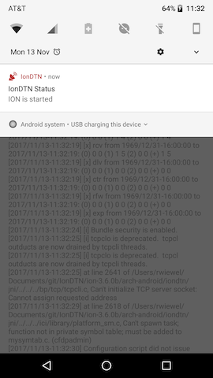
In case of IonDTN this notification shows the current status of the underlying native ION-DTN instance and is visible as soon as the status of the instance is different than stopped. Other possible statuses are starting, started and stopping. This status output allows the user to easily check the status at any given time, even if the application is not in the foreground. The notification remains in the notification center until the ION-DTN instance is stopped again.
The display of the continuous notification in the foreground will render the chance that Android is killing the service associated to the notification extremely unlikely.
More information about the startForeground() functionality can be found at this link.
BundleService
The BundleService provides the interface and communication structures and methods that render communication between the client applications on the Android device and the native ION-DTN instance possible.
Registering with the Operating System
As the service has to be accessible from outside of the application scope, the AndroidManifest.xml project file has to include a reference to this service. This ensures that the service is registered correctly with the operating system and that subsequently client applications can bind to the service by sending a request to to the OS.
...
<service
android:name=".services.BundleService"
android:exported="true"
android:label="@string/app_name"/>
...
The manifest registration contains the name of the service as well as the explicit command to export the service and thus make it available from the outside.
Operation Type
As the BundleService is using the underlying ION-DTN instance, the operation type has to be continuous (please refer to Lifecycle Management for details). Starting and stopping ION-DTN frequently would reduce the availability of the service significantly and would render real-world usage impossible.
Core Functionality
The service itself implements the interface functionality laid out in the IBundleService.aidl file. Most of the functionality is already described in the Interface chapters. Besides the visible functionality, the BundleService is also managing the listener management by starting and stopping ReceiverRunnable runnables when necessary. Details about the ReceiverRunnable can be found in the chapter Backend.
NodeAdministrationService
The NodeAdministrationService serves the purpose of providing configuration management functionality to internal application components like the GUI elements.
Why only internally?
This functionality should only be available to the user via the GUI and not to be modified by the client applications. This is to ensure a consistent configuration at any time. There might be multiple clients running at the same time that want to configure the node differently. No proper long-term configuration exclusion can be provided (which in turn would render the usage by other client applications impossible). Also, multiple concurrently running ION-DTN instances would contradict the daemon concept and exhaust the resources of many Android devices.
In conclusion, a proper configuration can only be ensured on a node-level and not on an application-level. Therefore only the user can configure the node. This is consistent with the way that nodes and their protocol stack is managed in nowadays internet. In the long run there might be additional DTN functionality that allows the auto-configuration of the node comparable to the Internets DHCP. ION-DTN already provides an DTN IP Neighbor Discovery Protocol (IPND) that (when activated and configured) automatically detects neighboring nodes and sets up contacts/ranges/inoutducts accordingly.
Registering with the Operating System
Like the BundleService, the NodeAdministrationService also has to be registered with the Operating System through the AndroidManifest.xml project file:
...
<service
android:name=".services.NodeAdministrationService"
android:exported="false"/>
...
However, as the NodeAdministrationService shall only be accessible from the inside, the service is not exported. Besides that the service is bound by internal components in the same way as client application bind to the BundleService.
Core Functionality
The NodeAdministrationService provides functionality to start and stop ION-DTN. These functions are run in AsyncTasks to prevent lag effects in the GUI.
Note: It is important to notice that despite being regarded as different components in the Android Application Architecture, the GUI and all services are still running in the same thread. Therefore, computation-expensive operations should be outsourced by e.g. using
AsyncTask.
Besides start and stop, the NodeAdministrationService also provides request functions for all relevant components of ION-DTN. Such requests can e.g. be getting all contacts currently scheduled in ION-DTN. The requests are handed to to the NativeAdapter (see chapter Backend) and then resolved by the JNI native application code. The return value of all these functions is a String that then has to be parsed to application objects (see chapter Types). Please refer to the chapter Ion Interaction - JNI on why returning a string is more effective than returning a more complex object.
The actual object operations (like adding/removing/editing) are performed directly in the GUI's edit dialogs and these operations communicate with the JNI layer without the involvement of the NodeAdministrationService. This is to remove the (unnecessary) indirection of calling NodeAdministrationService and NativeAdapter and also reduces the complexity of these function calls.
GUI
The Graphical User Interface (GUI) allows the user to configure, maintain and start/stop the underlying ION-DTN instance. In order to provide this functionality, the GUI consists of multiple activities, fragments and adapters (please refer to the Android documentation to learn more about these elements).
Structure

The GUI can be organized by the activities that they belong to:
- MainActivity: Handles the start/stop procedures and the actual configuration of the node.
- SetupActivity: Creates a default or custom configuration at the first application startup and runs the user through the entire process.
- SettingsActivity: Allows the modification of key values of the Android application and the ION-DTN instance that are not part of the normal configuration.
- AboutActivity: Provides some information about the application.
Configuration Fragments
In order to minimize redundant code in the provider application, the configuration fragments are all implemented in a inheritance structure:

All fragments are based on the ConfigurationFragment. This fragment is inheriting functionality of the standard Fragment class and is additionally adding some application-specific abstract functions that the child classes have to provide.
The Status Fragment class is special in its behaviour and is therefore directly inheriting the ConfigurationFragment class.
The other fragments are all based on the ConfigurationListFragment. As all configuration views have to provide a list of the configured ranges/routes/outducts etc. their behaviour is excactly the same, the only difference is the dataset their working on.
The different dataset is provided by the RecyclerViewAdapters. These adapters request a current dataset from the ION-DTN instance (via the JNI) and convert the returned string into a dataset. This dataset is the GUI list element and can be shown presented to the user.
Note: Function calls to native code are very expensive in regards of resource and time consumption. Therefore the number of native function calls should be reduced to a minimum. Furthermore, instantiating Java data types in native C code is very inefficient as well. Returning a
Stringobject and then parsing theStringobject in Java is way more efficient than creating a JavaSetstructure containingIntegersandStringsin the native code.
Setup Routine
The setup routine is accomplished by the SetupActivity. This activity uses multiple fragments (which are not based on a custom Fragment parent class) that guide the user through the setup process. The process and the corresponding Fragments of the process is shown in the following diagram:

All fragments and their operations are designed in a way to be self-explanatory. The actual configuration file generation depends on the settings that the user chooses in the Fragments of the SetupActivity.
The easiest way to create a set of configuration files for all ION-DTN administration programs is to choose the empty configuration. This configuration creates minimal configuration files that only ensure that the administration deamon programs are started properly. The users have to add routes/contacts/outducts etc. on their own.
The second option is to select the custom configuration. In this case, the user has to provide a standard .rc configuration file that is used to initialize ION-DTN on the first startup. On all subsequent startup an empty startup configuration file set is used. As the configuration is stored in persistent memory, a new initialization is not necessary.
Backend
The backend of the IonDTN application is consisting of 4 components. These components serve the purpose of providing a particular service/operation to other components of the application. However, in the sense of Android, these components are not regarded and registered as Services. Instead they are implemented as Java classes that are either accessed static or are instantiated by the client component.
ConfigFileManager
The ConfigFileManager is used during the initialization process and creates all necessary configuration files to start the ION-DTN instance for the first time. The ConfigFileManager supports the two initialization modes empty and custom. For empty the file manager simply creates empty configuration files that just contain the startup commands for the deamons. When the user selects a custom initialization and provides a .rc configuration file, the ConfigFileManager parses this file and creates a one-time startup configuration based on it. This first-time startup will setup the node as specified in the config file. From the second startup onwards, a empty configuration file just containing the startup commands for the deamons will be used.
IpndFileUpdater
The IpndFileUpdater updates the configuration file for the DTN IP Neighbor Discovery Protocol (IPND) deamon on each ION-DTN startup to represent the configuration by the user in the SettingsActivity. It uses the configuration values provided by the calling function and writes them in the file that is then used by the IPND deamon on startup.
NativeAdapter
The NativeAdapter is (for most cases) the link between the components of the Android app and the JNI native code interface. This indirection allows the clustering of similar requests and improves maintainability.
In addition, the NativeAdapter provides a static file, read/write functionality and a subscriber system for managing ION-DTN instances status changes. This helps ensuring that service and GUI elements are always in sync with the underlying functionality.
ReceiverRunnable
The ReceiverRunnable is instantiated by the BundleService whenever a receiver subscription for a particular EID is received. The receiving procedure in ION-DTN requires a thread actively waiting for a semaphore that is signaling an incoming bundle. Therefore, the ReceiverRunnable threads are mostly locked. The waiting for an incoming bundle has a timeout of 1 second. This is to ensure that the ReceiverRunnable is interrupted and stopped within a reasonable timeframe after a unsubscribing for that particular EID has been received.
Types
In the package gov.nasa.jpl.iondtn.types various types are implemented that represent a particular configurable object in the ION-DTN scope:
- DtnBabRule
- DtnBcbRule
- DtnBibRule
- DtnConfidence
- DtnContact
- DtnDataRate
- DtnEidScheme
- DtnEndpointIdentifier
- DtnInOutduct
- DtnKey
- DtnProtocol
- DtnRange
- DtnTime
All these types are used when data received from the JNI layer is received and parsed. The representation as these objects is then used when populating the RecyclerViews of the GUI and when calling the EditDialogs for a paticular object. In order to allow the passage of a particular object to an EditDialog (which is basically another Activity), all Dtn* objects are implementing the Parcelable interface to correspond with the Android guidelines.
All types have dedicated unit tests implemented in gov.nasa.jpl.iondtn.types.
Copyright
Copyright (c) 2017, California Institute of Technology.
ALL RIGHTS RESERVED. U.S. Government Sponsorship acknowledged.
License
ION-DTN and subsequently the IonDTN Android application is released under the following license:
Copyright (c) 2002-2017, California Institute of Technology. All rights reserved. Based on Government Sponsored Research under contracts NAS7-1407 and/or NAS7-03001.
Redistribution and use in source and binary forms, with or without modification, are permitted provided that the following conditions are met: 1. Redistributions of source code must retain the above copyright notice, this list of conditions and the following disclaimer. 2. Redistributions in binary form must reproduce the above copyright notice, this list of conditions and the following disclaimer in the documentation and/or other materials provided with the distribution. 3. Neither the name of the California Institute of Technology (Caltech), its operating division the Jet Propulsion Laboratory (JPL), the National Aeronautics and Space Administration (NASA), nor the names of its contributors may be used to endorse or promote products derived from this software without specific prior written permission.
THIS SOFTWARE IS PROVIDED BY THE COPYRIGHT HOLDERS AND CONTRIBUTORS "AS IS" AND ANY EXPRESS OR IMPLIED WARRANTIES, INCLUDING, BUT NOT LIMITED TO, THE IMPLIED WARRANTIES OF MERCHANTABILITY AND FITNESS FOR A PARTICULAR PURPOSE ARE DISCLAIMED. IN NO EVENT SHALL THE CALIFORNIA INSTITUTE OF TECHNOLOGY BE LIABLE FOR ANY DIRECT, INDIRECT, INCIDENTAL, SPECIAL, EXEMPLARY, OR CONSEQUENTIAL DAMAGES (INCLUDING, BUT NOT LIMITED TO, PROCUREMENT OF SUBSTITUTE GOODS OR SERVICES; LOSS OF USE, DATA, OR PROFITS; OR BUSINESS INTERRUPTION) HOWEVER CAUSED AND ON ANY THEORY OF LIABILITY, WHETHER IN CONTRACT, STRICT LIABILITY, OR TORT (INCLUDING NEGLIGENCE OR OTHERWISE) ARISING IN ANY WAY OUT OF THE USE OF THIS SOFTWARE, EVEN IF ADVISED OF THE POSSIBILITY OF SUCH DAMAGE.